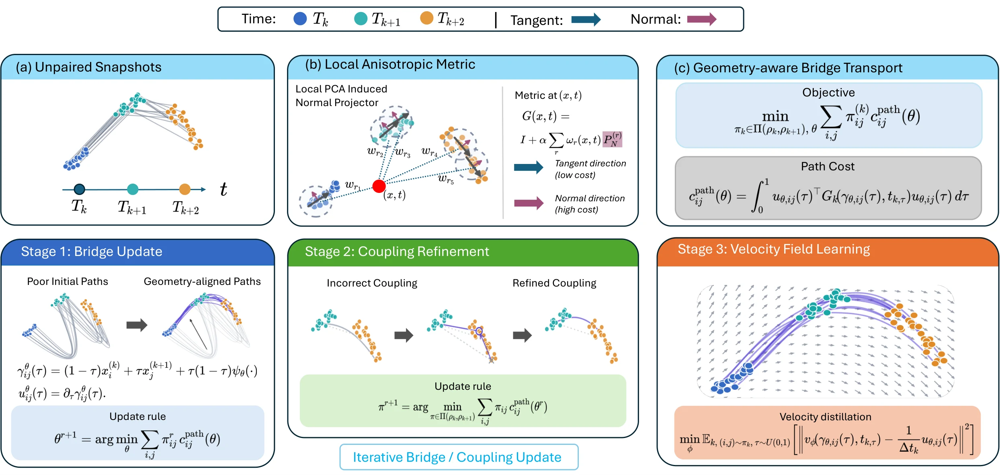

Problem
Sequencing destroys the cell. Every time point is a new, unpaired population, so which cell became which, and along what path, is never observed.
Euclidean coupling misreads asynchrony
Optimal-transport and flow methods usually pair cells by Euclidean proximity at clock time. Cells collected on the same day can sit at different developmental stages, so nearby is not the same as next.
PACE prices motion by local geometry
Moving along the locally supported cell-state manifold is cheap; moving across it is expensive. Couplings, paths, and the velocity field are all chosen under this one path cost.
Method
Three coupled steps, one geometry-aware action.
Anisotropic geometry
Local PCA on spatiotemporal neighbourhoods gives tangent and normal subspaces. The metric charges velocity along the normals.
Bridges ⇄ couplings
Endpoint-preserving neural bridges and cross-time OT couplings are refined in turn under the induced path action.
Velocity distillation
The bridges are distilled into one time-conditioned velocity field over cell states, integrated as an ODE at test time.

Results
lower MMD, W1 and W2 on average than the strongest competing baseline, across 7 datasets and 9 held-out reconstruction experiments.
better RNA-velocity alignment on embryoid-body differentiation. Velocity is used only for evaluation.
No cell pairing, lineage tracing or RNA-velocity supervision during training.
Held-out snapshot reconstruction
Lower is better. Time-averaged over held-out snapshots; values from the paper's tables (Ocean and Two-Branch averaged from per-snapshot tables). DMSB is not reported at 100D.
Citation
@inproceedings{yu2026pace, title = {PACE: Geometry-Aware Bridge Transport for Single-Cell Trajectory Inference}, author = {Yu, Chenglei and Wang, Chuanrui and Liao, Bangyan and Wu, Tailin}, booktitle = {Advances in Neural Information Processing Systems}, year = {2026}, note = {Poster}, url = {https://arxiv.org/abs/2605.18587} }
Code is released under the MIT license. The MFM baseline is adapted from Metric Flow Matching (Kapusniak et al., 2024).